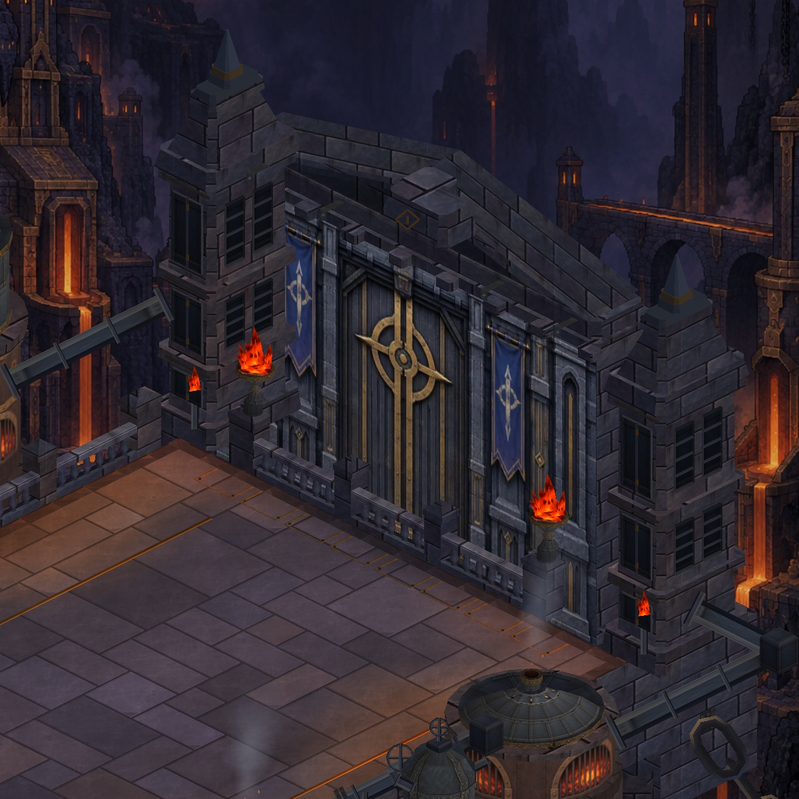
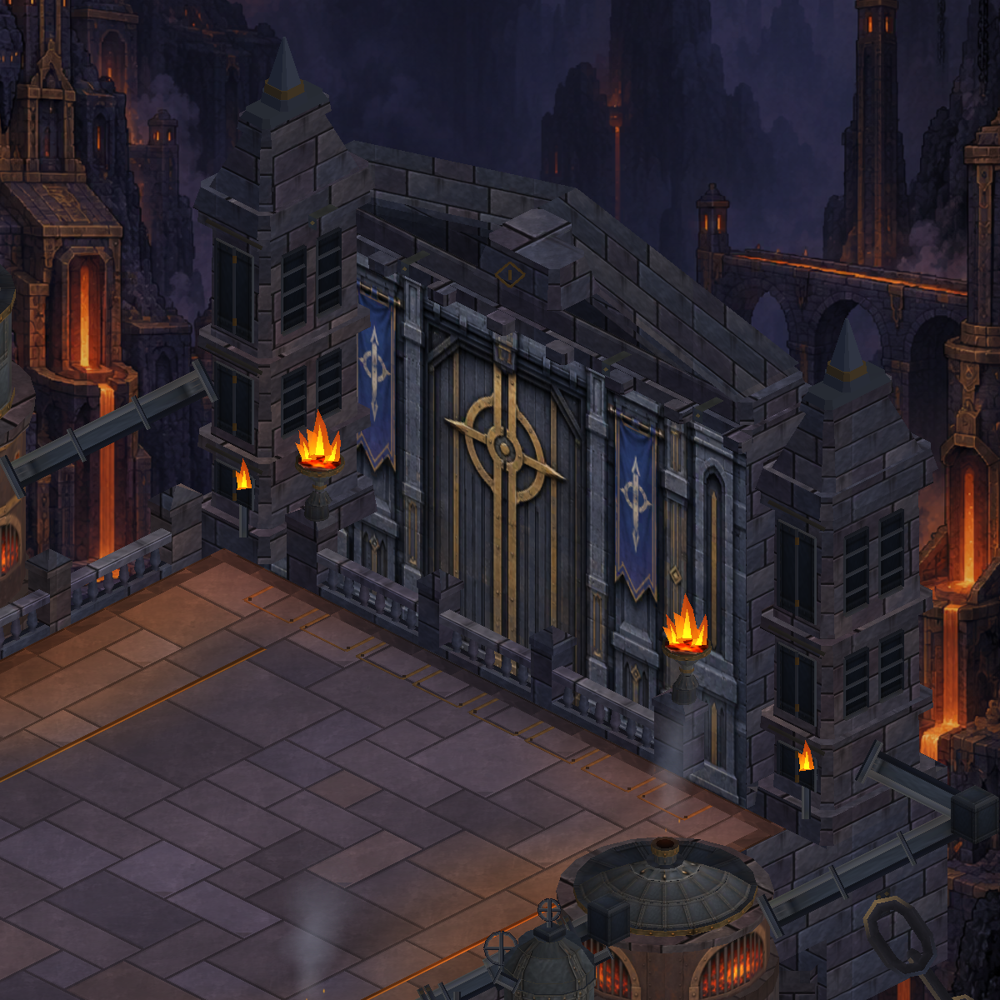

Dökümhane · Ateş okunabilirliği
Açık alevlerin içindeki siyah lav kabukları temizlendi; sarı merkezden turuncu uçlara geçiş eklendi. Aynı Unity kamerasıyla önce ve sonra.
Önce
Sonra
17 renderer / 80.344 vertex korunuyor. Mevcut doku atlası kullanılıyor. Bu çalışma statik alevlerin renk ve yüzey düzenlemesi; yeni animasyon eklenmedi.
Uygulama ve doğrulama notları